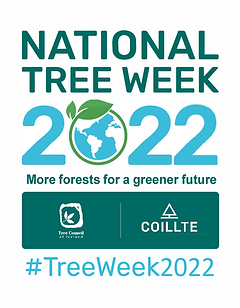
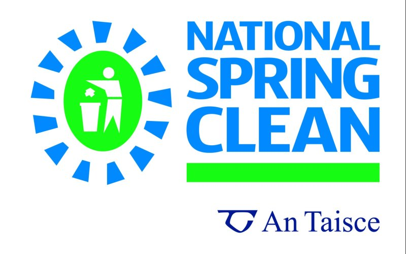

Upcoming Events
National Tree Week 2022
Organised by the Tree Council since 1985 and in partnership with Coillte since 1989. More info here
National Spring Clean is Ireland’s most popular, well recognized and successful anti-litter initiative. Taking place during the whole month of April and now in its 21st year, the campaign encourages every sector of society to actively participate and take responsibility for litter, by actually conducting clean ups in their own local environment. National Spring Clean traditionally takes place throughout the month of April. More info here
